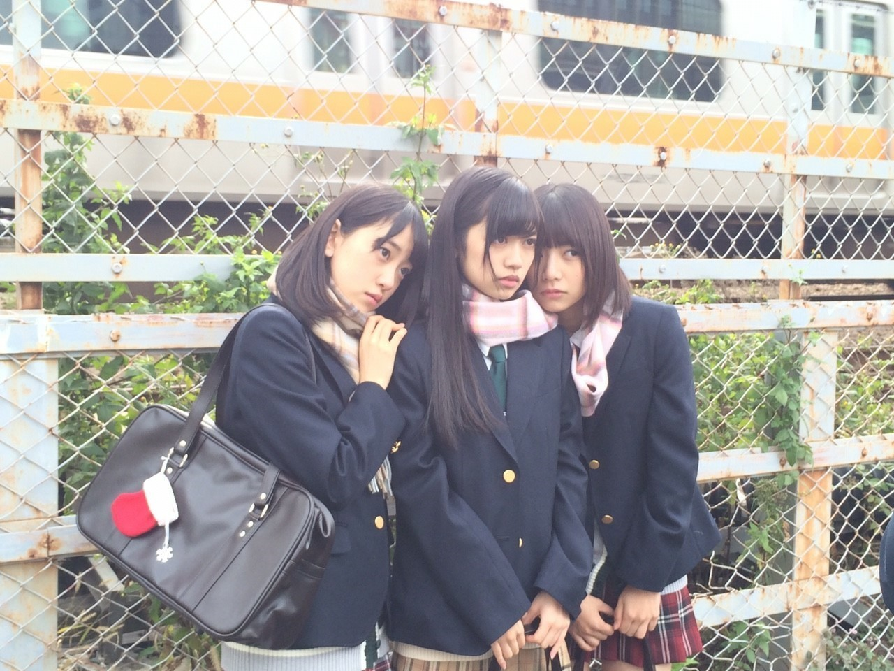
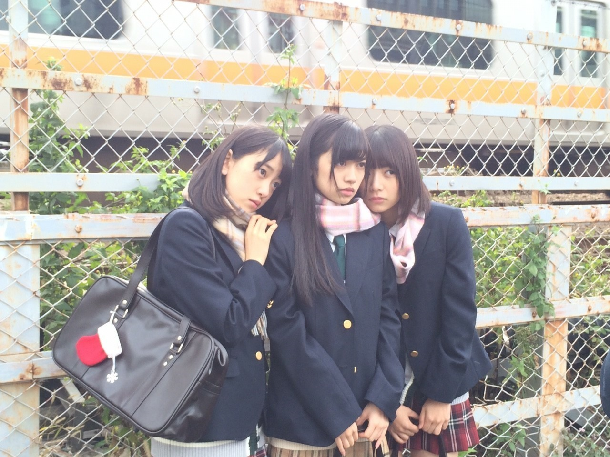

2020/1201Tue2020
ブログを作成しているときに
今日も1日お疲れ様でした。
12月も何卒です。✨

最後に最近の私を
2021年だと勘違いして書きそうになった
自分が居ました、、、
まだ、2020年らしい
12月になりました。
毎日バタバタしていますが
落ち着いてそして健康と安全第一に
今年も沢山思い出に残るような事をしたいです。✨
じゅんなお誕生日おめでとうだったー。✨
まだまだ、不安な日々が続きますが
手洗いうがいこまめな消毒
マスク
暖房なども大切ですが
自分が居ました、、、
まだ、2020年らしい
12月になりました。
毎日バタバタしていますが
落ち着いてそして健康と安全第一に
今年も沢山思い出に残るような事をしたいです。✨
じゅんなお誕生日おめでとうだったー。✨
まだまだ、不安な日々が続きますが
手洗いうがいこまめな消毒
マスク
暖房なども大切ですが
換気もこまめに。！
自粛で体力も落ちていると思うので
無理せずです。！
えいえいおー。
みおなについてはモバメやInstagramでも
触れました。
モバメではブログや他のSNSでは書けないような
意見を思うままに書きました。
ブログもどんな言葉を綴ればいいのか
すごく悩みました。
多くを語っても
自分以外の人に伝わる、伝えられる部分は
ほんと僅かだなと感じることが沢山ありますが
それでも、想いを書きました。
今、1番伝えたい、届けたい事は
いつか振り返ったとき
いい思い出になるように。
決まった以上その中で最高を目指したいです。
何より残りの短い時間
出来るだけそばに居たいです。
そばにいれるチャンスやタイミングが沢山増えるよう
ファンの皆さんと声を大きくして
活動したいです。
私の気持ちです。
自粛で体力も落ちていると思うので
無理せずです。！
えいえいおー。
みおなについてはモバメやInstagramでも
触れました。
モバメではブログや他のSNSでは書けないような
意見を思うままに書きました。
ブログもどんな言葉を綴ればいいのか
すごく悩みました。
多くを語っても
自分以外の人に伝わる、伝えられる部分は
ほんと僅かだなと感じることが沢山ありますが
それでも、想いを書きました。
今、1番伝えたい、届けたい事は
いつか振り返ったとき
いい思い出になるように。
決まった以上その中で最高を目指したいです。
何より残りの短い時間
出来るだけそばに居たいです。
そばにいれるチャンスやタイミングが沢山増えるよう
ファンの皆さんと声を大きくして
活動したいです。
私の気持ちです。
今日も1日お疲れ様でした。
12月も何卒です。✨

最後に最近の私を
これお気に入りの制服です。
繁体字版の制服可愛いですよね。
乃木恋やってる人ー。？？
良かったらちょっとした時間にやってみて下さいね。✨
2020/12/01 18:30


コメント(323)
ブログ更新ありがとうございます。
みおなの卒業だんだん2期生が減っていくの寂しいですよね！
卒業は良い事なんだけど、やっぱり仲の良い乃木坂はずっと一緒が理想ですね。男性アイドルグループはあまり卒業ないから女性アイドルグループでもあまり卒業無しにならないかな？それほど寂しいんだよね。12月もよろしくお願い致します。ライブ申し込みしましたよ。当選しますように！
残りの短い時間をどうかたくさんの思い出作りに当ててほしいです！
もう12月か〜あっという間に12月なんか驚きw
堀ちゃんの卒業は驚いてたよ
2期生が卒業するとやっぱ悲しいね
2期生も少なくなってきたけど乃木坂には2期生が必要だよね
2期生あってこその乃木坂！
蘭世も乃木坂に必要な存在！
大好きだよ!
蘭世も体調に気おつけてね〜
かけがえのない存在の蘭世頑張れ！
出来ないとわかっていても
推しには直接握手して
卒業おめでとうって伝えたいです…
未央奈がいなくなるのはとても寂しいけど
思い出話をまた蘭世に聞きに行きます！
未央奈の卒業は正直驚いて、言葉を失いました。最初は悲しいかったけど、今はこれからも応援する気持ちでいます！蘭世ちゃんにいつも元気貰ってるので、これからも頑張ってください！応援してます！！
26枚目シングルのミーグリ絶対また当てますので、待っててください笑
またブログの更新待ってます〜！
最近は乃木坂にとっても蘭世にとってもファンにとっても大きな発表がたくさんあって心の落ち着かない日が続いていると思います。
そんな中でもメールくれたり、Instagram を更新してくれたり、ブログを書いてくれたり、感謝しかないです。
いつもいつも本当にありがとうございます。
誰もがハッピーになれることなんてないんだと思うけれど、それでも蘭世が一番だと思う道を進んだらファンはみんな絶対についてくると思うし、そんな蘭世だからこその今いるファンなんだと思うな〜
何はともあれ、応援しかしてないです！
どんな蘭世もだいすきだよーと。
ではまたコメントしますね〜
体調には気をつけて！
未央奈ちゃんを笑顔で送り出すには一番近い存在の2期生が居てこそだと思います！
とても前向きな卒業ですし、悲しいと言ったら嘘になるかもしれないけれど、本当におめでとうという一言につきます
ミーグリ行こうかなと思ってます！
よろしくね！
かけがえのない時間を過ごしてくださいね。
もう12月なんですね(´・c_・`)早い…
乃木坂46としてよ未央奈さんと過ごせる残りの時間大切にしてください☺️
この前のANN聞きましたよー！○○ハラスメントですねー私はやっぱりアイドルハラスメントしてしまいがちですかねー
乃木恋やってるんですよぉ
この制服かわいいです！私も好きです！
サヨナラは通過点これからだって何度もある
これからもずーーーーーーーーーーーーーーーーーーーーーーっと応援してます！
蘭世さん大好き！
はづきより
もう12月だね〜
今年は自粛もあって例年よりも
あっという間だったなぁと思ったよ〜
大晦日の紅白まで、共に駆け抜けよう！
TVで蘭世を見れるのが毎年の楽しみだよ〜
未央奈の卒業は正直すごくびっくりした
インスタとモバメで未央奈への想いを読んで
改めて、二人は計り知れないほどの
思い出がたくさんあっていい関係だなぁと
じんわりきたよ〜
長いようであっという間だから
最後の最後まで、楽しく過ごそ！
12月になって、急に冷え込んだから
蘭世も体調気をつけてね！
私も気をつけます〜
いつも、注意喚起してくれてありがとう♪
蘭世のおかげで、消毒とか換気とか
より徹底できてます◎
またコメントするね！
ではっ！
これからも2期生を応援します。
もう12月ですか！？
早いですねぇ。残り１ヶ月お互い悔いのないよう頑張ろう！
未央奈と過ごす時間もよりよりものになることを願ってます
ミーグリ申し込むよー！
今回は、らんぜさんの後を引き継いだ瑠奈ちゃんにしてみました。蘭世さんがきちんとやっていたから引き継げた企画❗お疲れ様です。
世の中どこに居ても、なにしても100%満足出来る事はないから、「今を楽しく全力で生きよう！」
適当にやると得るものはないけど、全力でやれば失敗しても何かを必ず得られるよ(^-^)/
本当は甘えたがりな蘭世ちゃん！
ライブ応募したよ！当たるかな～(笑)
前回、日本武道館でライブみた時、トーク中ずっと自分のお尻を触ってたのが気になった！
癖かな？
その辺も楽しみにしてます
GOOD LUCK(^-^)/
今日から繁忙期だよー( ・∇・)
乃木恋やってるよー\(//∇//)\
もちろん蘭世の彼氏になるため頑張ってるよ！
今ランキングかなり上位でもある( ^ω^ )
また彼氏になるからよろしくねー♡
未央奈の卒業は悲しいけど次のステージでも活躍することを祈って送り出したい
乃木恋やってるよー
インスタ見てるよ。
未央奈が卒業寂しいね。
今のメンバー精一杯応援して行こうと思うよ。
二期生大好きです。
もう12月ですね。今年は正直苦しい1年でした。
来年も事態が好転するまで我慢の日々が続くのかなと思いますが自分のやれることを精一杯頑張っていきたいです！
今年も蘭世ちゃんにいっぱい元気をいただきました。
来年も蘭世ちゃんと一緒に頑張れたら嬉しいです:-)
どんなものにも、どんなことにも限りはあるけれど。
大切に想う気持ちには限界なんて無いからもっともっと大好きの気持ちを伝えていきたいね。
蘭世ちゃん大好きです。またね:-)
今日も一日お疲れ様！
もう12月だし2021年みたいなもんです(笑)
僕なんて既に令和何年か分かりません。
11月から寺田先生のモバメを取っています。
かっこいい写真や熱い想いが込められた長文など毎日ありがとうございます。しっかりと寺田先生の気持ちを受け止めております。
今も未来も、最高を極めようじゃないか！
p.s.
いつもブログ更新とモバメ送信ありがとう☆
家でゴロゴロするときは動画サイトでディズニーランドのBGMを聴いてます。
蘭世が次にどんな新しいことをしてくれるか、楽しみです!
未央奈との時間が少しでも多くなるといいね！
ライブ楽しみだ〜
本当に未央奈さんについては，びっくりしたし
まだまだいるものだと思ったから見たときの衝撃が凄かった
本当にいます，色んな意味で辛いと思うけど
精一杯未央奈さんと思い出を短い時間で使って欲しいと思います
らんらんさんならできる‼️
頼りにしてます！琴子ちゃんの時でも思ったけど、移り気なく芯があって頼りがいが有りますね。最後まで二期生盛り上げて下さい。よろしくです❗(^3^)/
もう12月だね！
僕も最近はやらなければならないことがあってバタバタしている日々です！
お互いにまずは健康第一でいきましょうね！！
純奈お誕生日おめでとうだね！！
僕実は、未央奈と蘭世のペアがすごく好きで
昔から2人のことをずっと注目してきたし、
応援してきたし、
大切に思って過ごしてきました
正直自分の中ではショックが大きすぎて
どうやって受け入れたら良いのか
どんな心持ちでこれから過ごせば良いのか
まだわからないままでいます
気持ちに嘘はつけないから
ただただ悲しいし辛いし
行き場のない思いが胸を締め付けます
でも、
それでも、
蘭世がよく言っている
「笑顔で見送ろう」という言葉を思い出して、
未央奈のためにも笑顔でいようと
下ばかり向いてられないなと思いました
僕自身、このペアの大大大ファンだから
2人が一緒にいる時間をいっぱい見たいし
2人で何かしているお仕事でも何でも一緒に楽しんでいる時間を切に願っています
だから蘭世の思いを「応援」で形にしていきたいし、
叶えさせてあげたいなと思っています
2人が素晴らしい思い出を作れるように、
心から応援していきます
時間は永遠じゃないから
できる限り色んな景色を一緒に見たいし、色んなことを共有していきたい
これからもよろしくお願い致します
一緒に花道を歩んでいきたい
僕らの応援で絶対その満開の花道に連れて行きます
応援しています
体調には気を付けてね
ライブ観るね！！
人として大好きです
今日もお疲れ様〜！！！
私もらんらんがみおなと素敵な時間を残りの間作れるような願っているね。
26枚目のミーグリも決まったね！
ミーグリで会えるのを楽しみにしてるよ〜
だいすきらんらん〜♪( ´θ｀)
スペシャルプレゼントの生写真が当たりました！
うれしい。実にうれしい。
握手会には行けませんが、
このような形で良いことがありました。
いつも応援しています。
堀さん卒業されますね、でも堀さんにやりたい事が出来ての卒業なので彼女の意志を応援したいです。
寒くなりましたね！貼るカイロ腰に貼ってます。靴下にも貼ろうかなって思ってます。暖かくして過ごして下さい。
おやすみ
私は1年中、この12月が1番好きです。
自分の誕生日も12月だし、クリスマス が
あるからテンションも高くてワクワクします。
日本のクリスマスはイルミネーションも
素敵で楽しいですが、4年間住んでたドイツの
クリスマスは格別に美しかったです。
12月1日からドイツのどの街でもクリスマス
マーケットが開催されクリスマスグッズ、
屋台、ホットワイン、人形劇場など昼間か
夜まで人があふれます。
蘭世さんもいつかドイツのクリスマスマーケットを観に行ってみてはいかがですか。
きっと楽しいと思います。
蘭世の言葉にはいつも力をもらってます！
自分も少しずつですが自分の意見や意志を大事にできるようになってきました。
これからも蘭世らしい姿でたくさん輝いていってほしいです！
みおなの卒業寂しいですけどみおなならきっとそんなの感じさせないくらいの明るい未来を見せてくれると思うので楽しみでもありますね。
二期生の先頭でいつも頑張ってくれていたみおなとの時間を二期生の皆さんがたくさん大事に楽しく過ごしていってほしいです。
年末は忙しいと思いますがくれぐれも体調には気をつけて頑張りましょう！
やぁ
メ―ルありがとう！
有難い事やわ。
だけど、自分の時間も大事にな。
メ―ルはな蘭世
いいね～俺は疲れた時は蘭世
音楽を聴きながら昔は歌ってたけど、ここ最近は聴くだけなってる。
あらそんなに声量増し増しになってるの？
ストレスフリーになれるならいい事やな
きっとまた後で(｡･ω･)ﾉﾞ
ミーグリですら人見知り発揮しそうでどうしようか迷い中、、、
乃木恋やってるよ〜、蘭世のストーリー？も進めてる！
インフルやコロナに気をつけて今年ラスト頑張ろー！えいえいおー！
乃木恋も乃木フェスもやってるよー！
未央奈卒業してさみしー
これからも応援してます！頑張ってください！
大好き！
未央奈ちゃんの卒業寂しいね…
残された時間を全力で楽しんでね！
未央奈との写真、凄く凄くキレイです！
卒業までに、未央奈とたくさん良い思い出が作れますように！
乃木恋やってみようかな！
Instagramの更新もたくさんありがとう〜
インスタの方もコメントできるようになったらいいなあ^^*
2期生が大好きだから色々思うことはあるけど
残りの時間楽しんで、！！って精一杯応援させてください
アンダラも楽しみだーーー
最新蘭世もかわいい♡♡
体調には気をつけてね！
次の更新もまってるね(*´ ³ `)ﾉ
寺田蘭世ワールド全開で
いい感じの寺田蘭世さん
ブログ更新ありがとう(^^)
本当に未央奈ちゃんの卒業は
ビックリした〜〜
しかし次のステージでも
未央奈ちゃんらしくやっていって
欲しいですね
あと純奈ちゃん誕生日おめでとう
ブログ更新ありがとうございます！
堀さんの卒業、驚きでした。
インスタもモバメも見ているので、寺田さんの気持ちは伝わってます！
残り時間は短いかもですが、乃木坂としてのお二人の共演が少しでも見たいです！
声あげていきます！
お身体に気を付けて頑張りましょう！！
未央奈さんの卒業発表は本当にびっくりしました！
辛いかもしれませんが、頑張りましょう！
私もずっと大好きな2期生の皆さんを応援し続けます！
これからも頑張ってください！
そして、未央奈さんの最後を笑顔で送りたいです！
これからも2期生の皆さんのご活躍をお祈りしています！
蘭世さん大好きです！
これからも頑張ってください！
1＋1=100 これを胸に頑張ります！
苦楽を共にした仲間で、卒業となるとどういう言葉を掛けてあげればよいか迷うのも無理ないよ
彼女がよく考えて決めたことだから、いま一緒にいられる時間を大切に過ごしながら頑張ってしか言えないけど
少しずつ前向きになってほしい。
らんぜちゃんが元気であるのが一番だから
写真から仲間への思いが凄く伝わり、尊く思います。2期はいつまでもかけないのない存在だよ。
アンダーライブがんばってね、蘭世ちゃんをしっかり見つつ応援していくよ。
ブログありがとう、インスタやモバメも毎回見てるよ。アイドルとして熱く活動していて素敵です
牡羊座の介護士アリエス
アンダーライブ、ミーグリで会えることを祈ってます！
コメントする